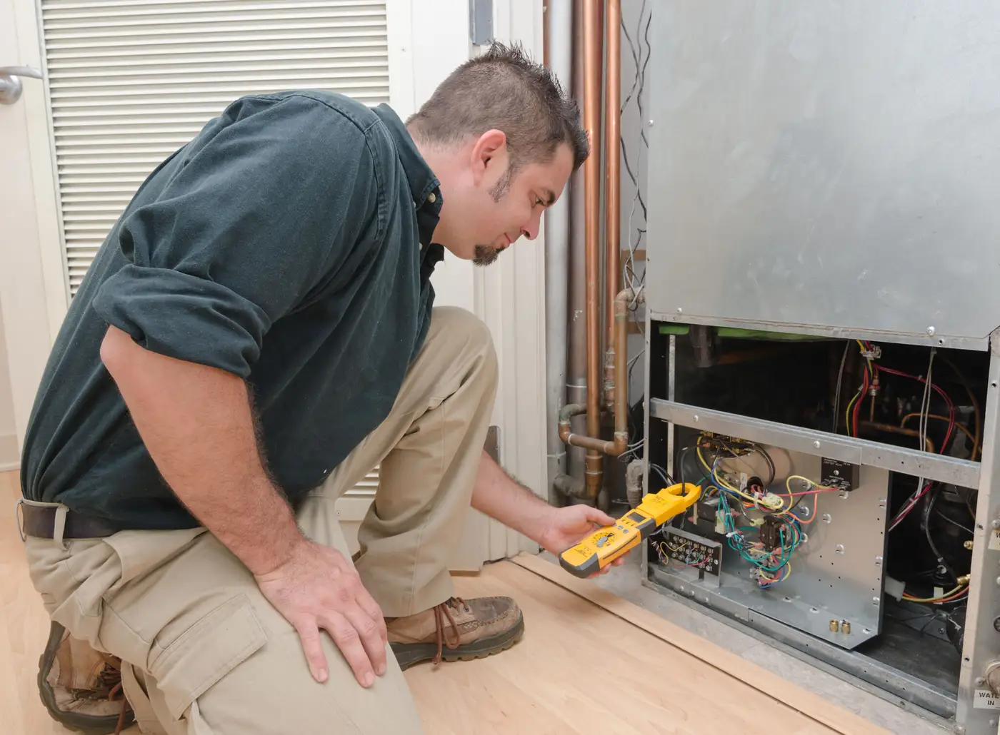

October 15, 2020
Fall is here, and winter is on the horizon—is your home ready? Check out these helpful tips to prepare your home for the colder weather.
Turn off Your AC
Once it’s cool enough outside to open your windows during the day, it’s time to turn off your air conditioner. Consider having your air conditioner maintained at the end of summer—this will help identify any issues and make sure your system is ready to go again in the spring! Cover your outdoor air conditioner to prevent twigs, leaves, and other debris from clogging it up when not in use.
Consider Upgrading Your Insulation
Insulation keeps your home toasty warm in the winter—and cool in the summer—by controlling the flow of heat. Adequate insulation helps ensure that your HVAC system runs efficiently, saving you money on your monthly energy bills. If your bills seem too high, or you struggle to maintain a comfortable temperature in your home, consult with a qualified home energy auditor, and consider upgrading your home’s insulation.
Book Your HVAC System Maintenance
Regular HVAC maintenance helps make sure your system functions properly when you need it—like on cold winter nights! At Goff Heating & Air Conditioning, we offer full-service maintenance, which includes:
Testing for carbon monoxide leaks.
Cleaning the burner assembly.
Cleaning the ignition assembly.
Inspecting the filtration systems.
Cleaning the blower motor.
Adjusting the blower components.
Testing and adjusting the safety controls.
Tightening all electrical connections.
Inspecting the combustion and flue draft.
Inspecting the vent piping.
Inspecting the humidification system.
We also offer maintenance services for heat pump units and air handlers. Having your system maintained can help identify small issues before they become big problems, saving you money on future repairs.
Consider Upgrading Your Furnace
Old furnaces not only require more regular repairs and maintenance, but they’re also less efficient than newer models—costing you more money in the long run. A significant spike in your energy bills, uneven heating throughout your home, low air quality, and frequent repairs are all signs that it’s time to replace your furnace.
At Goff Heating & Air Conditioning, we’re proud to offer a preventative maintenance program to serve our customers best. To learn more about our program, or book an appointment, call (903) 838-6923.